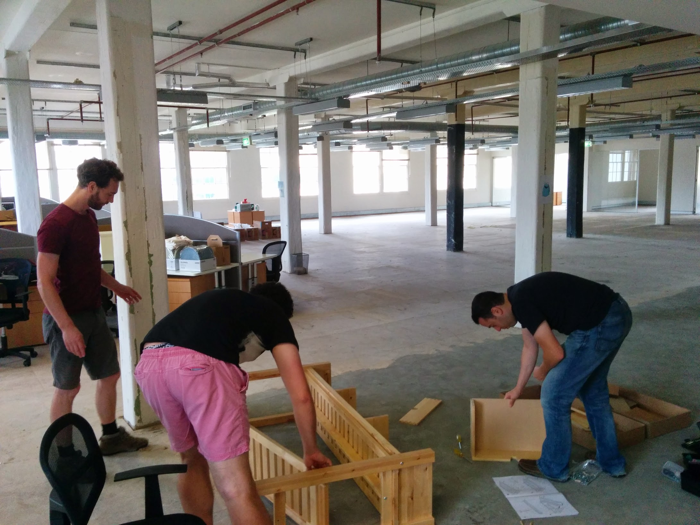
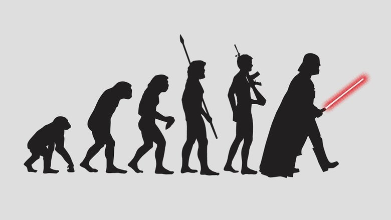

name: image layout: true class: center, middle, image --- name: image-white layout: true class: center, middle, image, image-white --- name: image-last layout: true class: center, middle, image, image-last --- name: ambiata layout: true class: ambiata --- name: ambiata-full layout: true class: center, middle, ambiata-full --- name: code-small layout: true class: code-small --- name: question layout: true class: center, middle, question --- name: rule layout: true class: center, middle, rule --- name: inverse layout: true class: center, middle, inverse --- name: starwars layout: true class: center, middle, starwars --- class: center, middle template: image <img src="images/love-the-bomb.jpg" height="100%" /> # How I learned to stop unit testing and love property-based testing --- template: ambiata-full # Charles O'Farrell # Ambiata --- template: starwars # A long time ago in a unit test # far, far away --- layout: false ## Once upon a time ```scala val json = """ { "name": "bob", "postcode": 7000 } """ val user = User("bob", 7000) parseJson(json) == user ``` --- ## Tedious ```scala parseJson(read("example1.json")) == user1 parseJson(read("example2.json")) == user2 parseJson(read("example2.json")) == user2 ``` --- template: image  # Manual labour --- template: question ## There's gotta be a better way? --- ## Getting warmer ```scala def inverse(user: User): Boolean = parseJson(toJson(user)) == user inverse(User("alice", 1000)) inverse(User("bob", 2000)) inverse(User("charles", 3000)) ``` --- template: question ## What if we could generate a User? --- ## Magic? ```scala summon { user: User => parseJson(toJson(user)) == user } ``` --- ## ScalaCheck! ```scala import org.scalacheck._ import org.scalacheck.Gen._ object UserJsonTest extends Properties("UserJson") { property("User json") = forAll { user: User => parseJson(toJson(user)) =? user } } ``` --- template: image class: middle, relative # ScalaCheck 101 --- ## Gen ```scala trait Gen[A] { def run(r: Random): Option[A] } object Gen { def string: Gen[String] } def forAll(gen: Gen[A])(p: A => Boolean): Boolean forAll(Gen.string) { s: String => ... } ``` --- template: question ## Build your own --- ## Step 1 - Data ```scala case class User(name: String, postcode: Int) ``` --- ## Step 2 - Just add Gen ```scala object GenUser { def user: Gen[User] = for { name <- Gen.string postcode <- Gen.int } yield User(name, postcode) } ``` --- ## So far so good ```scala forAll(GenUser.user) { user: User => ... } ``` --- ## Manual Composition ```scala forAll(???) { users: List[(Int, User)] => ... } ??? = Gen.list( Gen.tuple( Gen.Int, GenUser.user )) ``` --- ## Arbitrary ```scala case class Arbitrary[A](arbitrary: Gen[A]) object Arbitrary { def arbitrary[T](implicit a: Arbitrary[T]): Gen[T] = a.arbitrary } def forAll(p: A => Boolean) (implicit a: Arbitrary[A]): Boolean = forAll(a.arbitrary)(p) ``` --- ## Step 2 - Take 2 ```scala import org.scalacheck.Arbitrary._ object GenUser { def user: Gen[User] = for { name <- arbitrary[String] postcode <- arbitrary[Int] } yield User(name, postcode) } ``` --- ## Step 3 - Arbitrary ```scala object Arbitraries { implicit def UserArbitrary: Arbitrary[User] = Arbitrary(GenUser.user) } ``` --- ## Step 4 - Profit ```scala import Arbitraries._ forAll { user: User => ... } ``` --- ## Step 4 - Profit ```scala import Arbitraries._ forAll { users: List[(Int, User)] => ... } ``` --- template: inverse class: evolution  # Evolution --- ## In the beginning ```scala trait List[A] { def headOption: Option[A] } ``` --- ## Crawling out of the swamp ```scala Nil.headOption = None List(1).headOption = Some(1) List(1, 2).headOption = Some(1) List(1, 2, 3).headOption = Some(1) ... ``` --- ## Rookie mistake ```scala forAll { l: List[Int] => l.headOption =? (if (l.isEmpty) None else Some(l.head)) } ``` --- template: question ## This calls for... --- template: image-white <img src="images/patterns.jpg" style="width: 50%; left: 25%" /> # Patterns --- layout: false ## Patterns - Symmetry - Multiple paths - Induction - Invariants - Idempotence - Consistency --- template: inverse ## Symmetry --- template: image-white <img src="images/property-inverse.png" style="margin-top: 150px" /> --- template: image # There and back again --- ## We've seen this before... ```scala forAll { user: User => parseJson(toJson(user)) =? user } ``` --- ## Hello World ```scala forAll { s: String => s.reverse.reverse =? s } ``` --- ## Data Structures ```scala forAll { l: List[Int] => l.toStream.toList =? l } ``` --- ## Serialisation ```scala forAll { s: String => new String(s.getBytes) =? s } ``` --- ## Watch out for encoding! ```scala forAll { (s: String, c: Charset) => new String(s.getBytes(c), c) =? s } ``` --- template: rule ``` > ARG_0: "돪" > ARG_1: windows-1252 Expected "쮢" but got "?" ``` --- ## Files ```scala forAll { (s: String, c: Codec) => val f = File.createTempFile write(f, s, c) read(f, c) =? s } ``` --- template: question ## @mhibberd ## "Maybe you could test a relatively well known open source library and find a bug for something they have unit tests for" --- template: image-white <img src="images/challenge.jpg" /> --- ## Joda ```scala import org.joda.time._ forAll { dt: DateTime => val formatter = DateTimeFormat.fullDateTime() val dt2 = dt.withMillisOfSecond(0) formatter.parseDateTime(formatter.print(dt2)) =? dt2 } ``` --- template: rule ``` Invalid format: "Sunday, September 22, 2148 9:08:08 PM ART" is malformed at "ART" ``` --- ## Bug or Feature? - http://stackoverflow.com/questions/15642053/joda-time-parsing-string-throws-java-lang-illegalargumentexception - http://comments.gmane.org/gmane.comp.java.joda-time.user/1385 - https://github.com/JodaOrg/joda-time/commit/14863a51230b3d44201646dbc1ce5d7f6bb97a33 --- ## Not quite bugs :( - Scala Json - Can't handle `null` - https://issues.scala-lang.org/browse/SI-5092 - [commons-csv](http://commons.apache.org/proper/commons-csv/) - Uses \uFFFE for [disabling comments](http://commons.apache.org/proper/commons-csv/jacoco/org.apache.commons.csv/Lexer.java.html) - [jscv](https://code.google.com/p/jcsv/) - Is completely useless --- template: image <img src="images/golden-ticket.jpg" /> ## Symmetry is your golden ticket --- template: inverse # Multiple Paths --- template: image-white <img src="http://fsharpforfunandprofit.com/assets/img/property_commutative.png" style="margin-top: 120px;"/> --- ## List ```scala forAll { l: List[Boolean] => l.partition(b => b) =? (l.filter(b => b), l.filter(b => !b)) } forAll { (l: List[Int], i: Int) => l.take(i) ++ l.drop(i) =? l } forAll { (l: List[Int], i: Int) => l.splitAt(i) =? (l.take(i), l.drop(i)) } ``` --- ## Performance ```scala forAll { l: List[Int] => quickSort(l) =? bubbleSort(l) } ``` --- ## Aliases ```scala forAll { l: List[Int] => l.size =? l.length } forAll { l: List[Boolean] => l.filter(b => !b) =? l.filterNot(b => b) } ``` --- template: ambiata ## Example in the wild ```scala def dayMinus(d: Date, i: Int): Date = { ... } forAll { d: Date => d.toJoda.fromJoda =? d } forAll { (d: Date, i: Int) => dayMinus(d, i) =? d.toJoda.minusDays(i).fromJoda } ``` --- template: rule ``` A counter-example is [Date(2004,3,1), 1] (after 1 try) 'Date(2004,2,28)' is not equal to 'Date(2004,2,29)' ``` --- template: inverse # Induction --- layout: false ## Induction ```scala Nil.size =? 0 forAll { (i: Int, l: List[Int]) => (i :: l) =? (l.size + 1) } ``` --- template: inverse # Invariants --- layout: false ## Collect them all ```scala forAll { l: List[Int] => l.map(i => i).size =? l.size } ``` ```scala forAll { l: List[Int] => l.sorted.size =? l.size } ``` ```scala forAll { l: List[Int] => l.reverse.size =? l.size } ``` --- layout: false ## Idempotence ```scala forAll { s: String => s.distinct.distinct =? s.distinct } forAll { s: String => s.sorted.sorted =? s.sorted } ``` --- ## Consistency ```scala forAll { (s1: String, s2: String) => val f = File.createTempFile write(f, s1) write(f, s2) read(f) =? s2 } ``` --- template: image <img src="images/everywhere2.jpg" height="120%" style="margin-top: -60px" /> ## The same patterns everywhere --- ## This again?! ```scala trait List[A] { def headOption: Option[A] } ``` --- ## Easy - Induction ```scala Nil.headOption =? None forAll { (h: Int, t: List[Int]) => (h :: t).headOption =? Some(h) } ``` --- template: image ## Data is like an onion --- ## NonEmptyList ```scala import scalaz._ case class NonEmptyList[A](head: A, tail: List[A]) { def list: List[A] = head :: tail } import scalaz.scalacheck.ScalazArbitrary._ forAll { l: NonEmptyList[Int] => l.list.headOption =? Some(l.head) } ``` --- template: image-white --- template: inverse # Types are a thing --- ## Seems legit ```scala case class User( name: String, postcode: Int) ``` ```scala def genUser: Gen[User] = for { n <- arbitrary[String] p <- arbitrary[Int] } yield User(n, p) ``` --- ## Symmetry FTW ```scala forAll { u: User => UserService.get(UserService.add(u)) =? u } ``` --- template: rule ``` Invalid postcode > ARG_0: User("bob", -1) ``` --- ## Business Rules ```scala def genUser: Gen[User] = for { n <- arbitrary[String] p <- Gen.choose(1, 9999) } yield User(n, p) ``` --- ## But what about? ```scala object UserService { def findByPostcode(postcode: Int): Option[User] def updatePostcode(id: UserId, postcode: Int): Boolean } ``` ```scala forAll { p: Int => UserService.findByPostcode(p) } ``` --- ## Be Precise ```scala class Postcode private(val value: Int) extends AnyVal object Postcode { def fromInt(i: Int): Option[Postcode] = if (i > 0 || i < 10000) Some(new Postcode(i)) else None } case class User( name: String, postcode: Postcode) def genPostcode: Gen[Postcode] ``` --- template: question ## Property-based testing leads to... --- template: inverse ## TDD --- template: inverse ## Type Driven Development --- template: inverse # Frequency --- ## Naive ```scala def genInt: Gen[Int] = Gen.choose(Int.MinValue, Int.MaxValue) ``` --- ## More Frequent ```scala def genInt: Gen[Int] = Gen.frequency( 10 -> 0, 10 -> Int.MaxValue, 10 -> Int.MinValue, 5 -> 1, 5 -> -1, 50 -> Gen.choose(Int.MinValue + 1, Int.MaxValue - 1) ) ``` --- ## More Frequent ```scala def genOption[A](gen: Gen[A]): Gen[Option[A]] = Gen.frequency( 90 -> gen.map(Some), 10 -> Gen.const(None) ) ``` --- ## Generators - Are an asset - Require investment - Pay dividends - Called from other generators - Used in multiple properties --- template: inverse # "Real World" --- layout: false ## DB ```scala property("insert empty") = forall { u1: User => for { id <- UserDB.insert(u1) u2 <- UserDB.get(id) } yield e2 =? Some(u1) } ``` --- template: question ## Symmetry --- template: rule ``` Expected Some(User(\NULL)) but got Some(User()) ``` --- ## DB ```scala property("insert non-empty") = forAll { (u1: User, u2: User) => for { i1 <- UserDB.insert(u1) i2 <- UserDB.insert(u2) u3 <- UserDB.get(i2) } yield u3 =? Some(u2) } ``` --- template: rule ``` User with name already exists > ARG_0: User("bob") > ARG_1: User("bob") ``` --- ## DB ```scala property("insert non-empty unique") = forAll { (u1: User, n1: String, n2: String) => n1 != n2 ==> for { i1 <- UserDB.insert(u1.copy(name = n1)) i2 <- UserDB.insert(u1.copy(name = n2)) u2 <- UserDB.get(i2.get) } yield u2 =? Some(u1.copy(name = n2)) } ``` --- template: question ## Symmetry + Invariants --- ## DB ```scala property("insert non-empty duplicate") = forAll { (u1: User, u2: User, name: String) => for { i1 <- UserDB.insert(u1.copy(name = name)) i2 <- UserDB.insert(u2.copy(name = name)) } yield (i1.isDefined, i2.isEmpty) =? (true, true) } ``` --- template: question ## Invariants --- ## DB ```scala property("list") = forAll { users: UniqueUsers => for { _ <- users.list.traverse(u => UserDB.insert(u)) u <- UserDB.listSortByName } yield u =? users.list.sortBy(_.name) } ``` --- template: question ## Symmetry + Multiple Paths --- template: inverse ## Is it too slow to run 100 times? --- ## Minimum tests ```scala prop { (input: Input) => runHadoopOhGodItsSlow(input) ==== input.groupBy(_.x).sortBy(_.y) }.set(minTestsOk = 3) ``` --- ## Not perfect but... - Still better than hard-coded tests - Can increase number locally - Separate build with different sizes - Need to think harder about your code! --- template: inverse ## Almost there --- template: question ## This has nothing to do with Scala --- ## Java ```java @Theory public void testAddition( @ForAll int a, @ForAll int b) { assertEquals(a + b, b + a); } ``` --- ## Javascript ```js check.it('Addition', // NOTE: No arbitrary - manual gen [gen.int, gen.int], function(a, b) { (a + b).should.equal(b + a) } ) ``` --- template: ambiata ## Ambiata - We have a majority of property-based tests - Our default - Need a compelling reason to write unit tests --- template: image ## Every function that properties test... --- template: ambiata ## [Shameless Plug - Disorder](https://github.com/ambiata/disorder/tree/master/src/main/scala/com/ambiata/disorder) - DistinctList - DistinctPair - List10/List100/List1000 - NaturalInt - NonEmptyString - OrderPair - etc... --- template: image --- layout: false # Links - John Hughes - "Testing the Hard Stuff and Staying Sane" - https://www.youtube.com/watch?v=zi0rHwfiX1Q - Jessica Kerr - "Property-Based Testing for Better Code" - https://www.youtube.com/watch?v=shngiiBfD80 - "Choosing properties for property-based testing" - http://fsharpforfunandprofit.com/posts/property-based-testing-2/